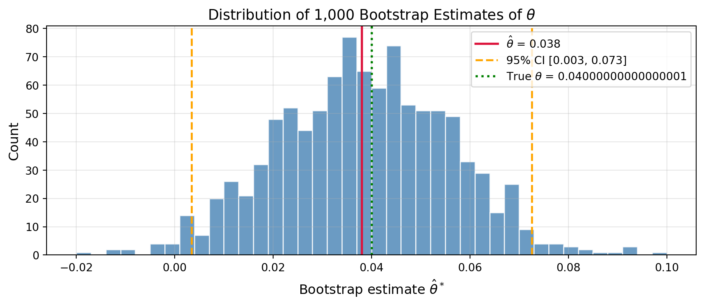
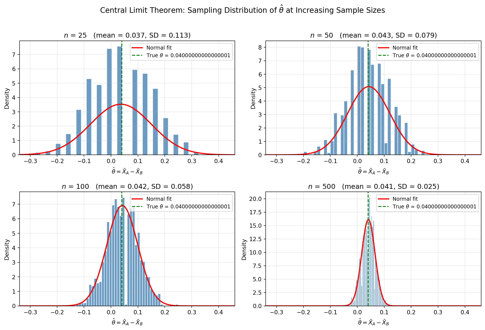
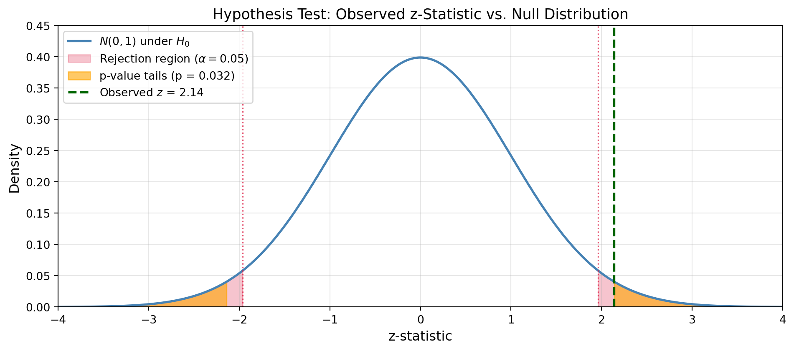

Simulating Key Ideas from Classical Frequentist Statistics
A comprehensive simulation study using Python to explore the statistical foundations of A/B testing, covering the Law of Large Numbers, Central Limit Theorem, and the risks of data peeking.
Author
Riley Li
Published
June 6, 2026
Introduction
Every website with a newsletter faces the same quiet question: which words actually convince people to sign up? On a homepage, the phrasing of a single button or headline — the “call to action” (CTA) — can meaningfully change how many visitors become subscribers. To answer this question rigorously, we run an A/B test.
The setup is simple. We have two candidate CTAs:
CTA A: “Sign up for our newsletter here!”
CTA B: “Stay up to date by signing up!”
Each visitor to our site is randomly assigned to see one of the two options. We then compare the sign-up rates between the two groups. Random assignment is the key ingredient: it ensures that any difference in outcomes is attributable to the CTA itself, not to the type of person who happened to see it.
In this post, we work through the statistical machinery behind such a test using simulated data. Along the way, we visit some of the most important ideas in classical frequentist statistics: the Law of Large Numbers, the bootstrap, the Central Limit Theorem, hypothesis testing, and the connection between a t-test and linear regression. We also demonstrate a subtle but serious pitfall — what happens when an impatient analyst peeks at the results too early.
The A/B Test as a Statistical Problem
Each visitor either signs up or does not, making their outcome a binary 0/1 variable. We model this as a draw from a Bernoulli distribution: a coin flip with some probability \(\pi\) of landing heads (signing up).
Because the CTA a visitor sees might influence their decision, we allow the sign-up probability to differ by group:
Visitors who see CTA A sign up with probability \(\pi_A\)
Visitors who see CTA B sign up with probability \(\pi_B\)
The quantity we actually care about is the difference in sign-up rates: \[\theta = \pi_A - \pi_B\]
If \(\theta > 0\), CTA A performs better. If \(\theta < 0\), CTA B wins. If \(\theta = 0\), it doesn’t matter which one we use.
Of course, we don’t observe \(\pi_A\) and \(\pi_B\) directly — we only observe the outcomes for the visitors in our experiment. Our best guess at \(\theta\) is the difference in sample proportions: \[\hat\theta = \bar{X}_A - \bar{X}_B\]
Since each observation is 0 or 1, the sample mean is just the fraction who signed up, so \(\bar{X}_A = \hat\pi_A\) and \(\bar{X}_B = \hat\pi_B\). This is our estimator. The rest of this post is about understanding its behavior.
Simulating Data
In a real experiment we would not know the true values of \(\pi_A\) and \(\pi_B\) — that is the whole point of running the test. But for the purposes of this exercise, we set the true values ourselves. This lets us study how our estimator behaves when we know exactly what the right answer is.
We set \(\pi_A = 0.22\) and \(\pi_B = 0.18\), so the true difference is \(\theta = 0.04\). We then simulate 1,000 Bernoulli draws for each group — as if 2,000 visitors arrived at our site, half randomly assigned to each CTA.
Our estimates land close to the truth, but not exactly — that small gap is just random sampling noise. The rest of this post is about quantifying and reasoning about that noise.
The Law of Large Numbers
The Law of Large Numbers (LLN) tells us that as the sample size grows, the sample mean converges to the population mean. Applied to our problem: as more visitors accumulate in each group, \(\hat\pi_A\) will get closer and closer to \(\pi_A\), and therefore \(\hat\theta\) will get closer and closer to the true \(\theta = 0.04\). This is what gives us confidence in our estimator in the first place — given enough data, it will eventually find the right answer.
We can demonstrate this visually. For each observation \(i = 1, 2, \ldots, 1000\), we compute the element-wise difference between the CTA A and CTA B draws, then track the running mean of those differences as \(i\) grows.
With just a handful of observations, the running mean swings wildly — anywhere from well below zero to well above 0.10. But as the sample size grows, the estimate settles down and homes in on the true value of 0.04. By 1,000 observations it has converged to 0.038, just a hair below the truth. The LLN is what justifies collecting more data when we are uncertain: patience is eventually rewarded with accuracy.
Bootstrap Standard Errors
The LLN tells us our estimator will eventually be right. But with a fixed sample — say, 1,000 visitors per group — how precise is it? We need more than a point estimate; we need a confidence interval that communicates our uncertainty.
One way to get there is the bootstrap. The idea is elegant: instead of deriving a formula for the variability of \(\hat\theta\), we let the data speak for themselves. We treat our observed sample as a stand-in for the population, and repeatedly resample from it (with replacement) to simulate what would happen if we ran the experiment many times. The spread of the resulting estimates tells us how variable \(\hat\theta\) is.
We compare the bootstrapped standard error to the closed-form analytical formula. For the difference in means of two independent Bernoulli samples: \[SE(\hat\theta) = \sqrt{\frac{\hat\pi_A(1 - \hat\pi_A)}{n_A} + \frac{\hat\pi_B(1 - \hat\pi_B)}{n_B}}\]
The bootstrap SE (0.0177) and the analytical SE (0.0178) are nearly identical — reassuring evidence that the bootstrap is working correctly. Using the bootstrap SE, our 95% confidence interval for \(\theta\) is roughly [0.003, 0.073]. The interval is entirely above zero, suggesting CTA A has a higher sign-up rate, though the true difference could be anywhere from negligibly small to about 7 percentage points.

The Central Limit Theorem
We now understand that \(\hat\theta\) will converge to the truth (LLN) and that we can estimate its variability (bootstrap). But to do formal hypothesis testing, we need to know the shape of \(\hat\theta\)’s sampling distribution — not just its mean and spread.
The Central Limit Theorem (CLT) provides the answer: regardless of the shape of the underlying population distribution, the sampling distribution of the sample mean becomes approximately Normal as the sample size grows. Since \(\hat\theta\) is a difference of two sample means, the same applies here.
We demonstrate this by repeating the experiment 1,000 times for each of four sample sizes \(n \in \{25, 50, 100, 500\}\) and plotting the distribution of the resulting \(\hat\theta\) values.

At \(n = 25\), the histogram is ragged and noticeably asymmetric — there just are not enough observations to smooth out the lumpy underlying Bernoulli distribution. By \(n = 100\) the distribution already looks quite bell-shaped, and by \(n = 500\) it is nearly indistinguishable from a Normal curve. This progression is the CLT in action. For our experiment with \(n = 1000\) per group, we can be confident that \(\hat\theta\) is well-approximated by a Normal distribution, which is the foundation for the hypothesis test in the next section.
Hypothesis Testing
We now have all the ingredients for a formal test. We want to evaluate whether the observed difference between the two CTAs is large enough to rule out pure chance.
We set up two competing hypotheses:
Null hypothesis\(H_0: \theta = 0\) — the two CTAs produce the same sign-up rate
Alternative hypothesis\(H_1: \theta \neq 0\) — the CTAs differ
The CLT tells us that \(\hat\theta\) is approximately Normal in large samples. Under \(H_0\), the mean of that distribution is 0. To figure out how extreme our observed \(\hat\theta\) is, we standardize it: \[z = \frac{\hat\theta - 0}{SE(\hat\theta)}\]
This works for three reasons. First, by the CLT, \(\hat\theta\) is approximately Normal. Second, under \(H_0\), it is centered at zero. Third, dividing a Normal random variable by its standard deviation produces a standard Normal \(N(0,1)\). So \(z \;\dot\sim\; N(0,1)\) under the null, and we know exactly how big \(z\) would need to be to be considered surprising.
This procedure is sometimes called a t-test, but that label is slightly imprecise in our setting. A true t-distribution arises when the underlying data are Normal and the variance is unknown — the ratio of the estimate to its estimated SE then follows an exact t-distribution. Here, our data are Bernoulli (not Normal), so there is no exact result; we rely on the CLT for approximate Normality. What we are doing is closer to a z-test. For large samples the t-distribution and the standard Normal are nearly identical, so the distinction has no practical consequence — but it matters conceptually.
The z-statistic is 2.14, and the two-sided p-value is 0.032. Since 0.032 < 0.05, we reject the null hypothesis at the 5% significance level. Our data provide statistically significant evidence that CTA A and CTA B produce different sign-up rates.
Interpreting this carefully: the p-value does not say there is a 3.2% chance the null is true. It says that if the null were true, we would observe a difference this large or larger only 3.2% of the time by chance alone. We judged that unlikely enough to reject \(H_0\).
To make this concrete, the figure below shows the standard normal sampling distribution of the z-statistic under \(H_0\). The shaded red regions are the rejection zones at the 5% significance level (anything beyond \(|z| > 1.96\)). Our observed \(z = 2.14\) lands inside the right-hand rejection zone, and the orange tails together represent the two-sided p-value of 0.032: the probability of seeing a result this extreme or more, if the null were true.

The visual makes the test outcome unambiguous: the observed \(z\) falls beyond the critical value, so we reject \(H_0\). It also shows why peeking, which we examine in the final section, is so dangerous: every additional check is another chance for random noise to push \(z\) into the red zone purely by accident.
The T-Test as a Regression
The two-sample test above is mathematically equivalent to a simple linear regression — a connection that is easy to miss but surprisingly useful. Understanding it opens the door to a much more flexible framework for analyzing experiments.
The setup: we stack the CTA A and CTA B observations into a single dataset with an outcome \(Y_i\) (1 = signed up, 0 = did not) and a treatment indicator \(D_i\) (1 = saw CTA A, 0 = saw CTA B). We then fit: \[Y_i = \beta_0 + \beta_1 D_i + \varepsilon_i\]
The coefficients have clean interpretations:
\(\beta_0\) is the expected \(Y_i\) when \(D_i = 0\) — the mean of the B group, which estimates \(\pi_B\)
\(\beta_0 + \beta_1\) is the expected \(Y_i\) when \(D_i = 1\) — the mean of the A group, which estimates \(\pi_A\)
Therefore \(\beta_1 = \pi_A - \pi_B = \theta\)
In other words, \(\hat\beta_1\) is numerically identical to \(\hat\theta\).
The point estimates and test statistics are essentially identical. The tiny difference in standard errors arises because OLS assumes a single pooled variance across groups, while our two-sample formula allows separate variances — the distinction rarely matters in practice.
Why does this equivalence matter? Because the regression framework generalizes naturally to more complex settings: add a control variable for the day of the week, include an interaction to test whether the CTA effect differs by device type, or extend to three or more treatment arms. In each case the same OLS machinery produces valid inference, while the mechanics of the underlying two-sample test would need to be rederived from scratch.
The Problem with Peeking
So far, everything has gone smoothly. We ran our experiment, waited for the data to come in, and conducted a single test. But in practice, patience is in short supply. What if we checked the results along the way — say, after every 100 new visitors per group — and stopped the experiment the moment one of those interim tests came back significant?
This practice, called peeking, is a serious problem under classical frequentist statistics. A single test at \(\alpha = 0.05\) has a 5% chance of a false positive — rejecting \(H_0\) even when it is true. But each additional peek is another opportunity to get unlucky. Across multiple tests on accumulating data, the probability of at least one false rejection climbs far above 5%.
We can demonstrate this with a simulation. We set \(\pi_A = \pi_B = 0.20\) — the null is true, there is no difference between the CTAs — and simulate 10,000 experiments. In each experiment, we peek after every 100 observations per group (at \(n = 100, 200, \ldots, 1000\)) and flag the experiment as a false positive if any of the 10 interim tests reaches \(p < 0.05\).
With a single look at the data, the false positive rate is right at 5% — exactly as advertised. But with 10 interim peeks, the empirical false positive rate jumps to roughly 20%, nearly four times the nominal level. The bar chart makes the inflation visible: each additional look adds more and more probability of a spurious “significant” result.
The lesson is stark. If you run a test and check it repeatedly until it crosses \(p < 0.05\), you are not really running a 5%-level test — you are running a much more permissive one without realizing it. In practice, the remedy is to decide in advance how many observations you will collect and commit to a single final test, or to use methods specifically designed for sequential testing (such as sequential probability ratio tests or Bayesian approaches) that account for the multiple looks explicitly.